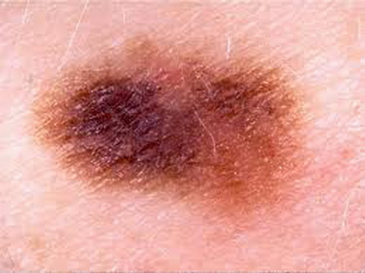
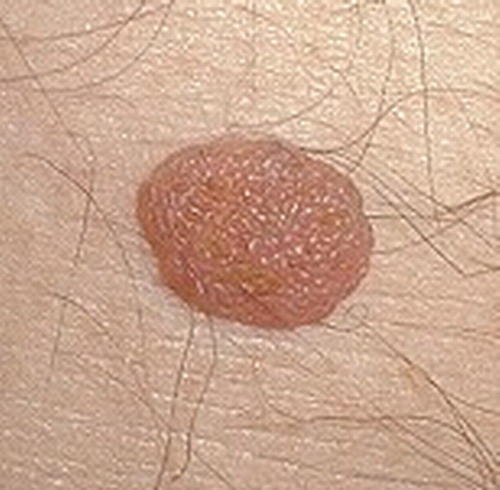
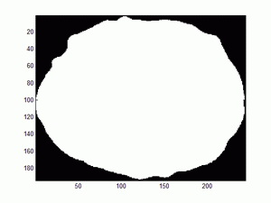
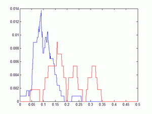
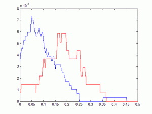
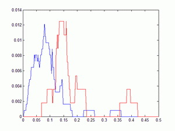
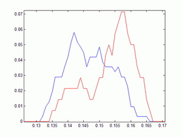
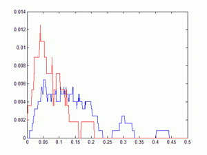
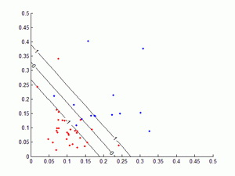
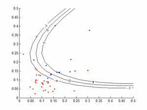

Melanoma is the most dead skin cancer. The resource to detect melanoma is expensive and limited. There are differences between image of lesion of melanoma and other non-deadly skin lesion. It is possible to tell whether it is melanoma based on image of lesion. Even the pattern recognition technique can be applied to the recognition of melanoma, so melanoma can be automatically recognized, but the images used in recognition must be generated by specific professional equipment. So, can the recognition be pushed to the limited that use normal images like images generated by smart-phone camera in recognition? This is meaningful, because by doing so the recognition work can be done at home, everyone can do it almost free. We do not need extreme accuracy in the self-detection of melanoma, because it is only used for the preliminary examination.
Fig.1 Image of melanoma
Fig.2 Image of benign skin cancer
I find 30 and 14 images of non-melanoma and melanoma respectively online, and some image processing works are applied to the images.
Fig.3 Image of a melanoma after segment. The white area denotes the pattern of melanoma.
Fig.4 Image of a melanoma after KL transform, pattern is align to main axis.
Fig.5 Distribution of degree of asymmetry of shape
Red line: melanoma
Blue line: non-melanoma
First I applied KL transform to align the pattern to main axis. Then measured the axial symmetry of illumination distribution inside the melanoma.
Fig.6 Distribution of degree of asymmetry of color distribution
Red line: melanoma
Blue line: non-melanomaa
Computer the variance of R,G,B, and average the three numbers to get the degree of variance of color.
Fig.7 Distribution of degree of variance of color
Red line: melanoma
Blue line: non-melanoma
I use the fractal dimension to indicate the degree of lump of border. But because the border curve of pattern is not a real fractal shape, I can’t obtain the real dimension. In fact the fractal dimension of our pattern depends on the size of unit we use to measure. So I must choose a proper size of unit with which the melanoma can be detected most effectively.
Fig.8 Distribution of degree of lump of border
Red line: melanoma
Blue line: non-melanoma
First I computed the mean R,G,B components of melanoma and non-melanoma, and obtained two points in RGB space which represented melanoma and non-melanoma respectively: (Rgood,Ggood,Bgood) and (Rbad,Gbad,Bbad). Then I computed the distance in RGB space between the color of each sample image to point (Rgood,Ggood,Bgood).
Fig.9 Distribution of Distance in RGB space
Red line: melanoma
Blue line: non-melanoma
Fig.10 ROC of each feature. Rose, green, black, blue and red color curve represent feature 3, 1, 2, 4, 5
I implemented the SVM by myself based on the matlab build-in Quadratic programming solver. I used the Polynomial Kernel function with the parameter equate to 2. And chose a proper value for the slack variable. Before fed the features into SVM, I normalized the data by dividing the norm of the feature vector.
 Fig.11 Margin of classification. Horizontal axis and vertical axis denote feature 1 and feature 3 respectively
Red point: melanoma
Blue point: non-melanoma
| Feature | 2 | 3 | 4 | 5 |
| 1 | 0.84 | 0.73 | 0.86 | 0.84 |
| 2 | 0.86 | 0.84 | 0.84 | |
| 3 | 0.79 | 0.84 | ||
| 4 | 0.91 |
Table.1 Accuracy rate by using two features, the meaning of number in the table are described as below:
1: Distance between colors in RGB space.
2: Degree of lump of border.
3: Degree of asymmetry of color distribution.
4: Degree of variance of color.
5: Degree of asymmetry of shape.
We can find the highest rate occur when using feature 4 and 5
| feature | 4&5 |
| 1 | 0.88 |
| 2 | 0.91 |
| 3 | 0.91 |
Accuracy rate by using three features, the meaning of number in the table are same as Table.1
We can find the highest rate occur when using feature 4 and 5
Further study show that the accurate rate is not enhanced by adding more features compare to just using feature 4 and feature 5.